如今开发 iOS App 需要面对六种不同的 iPhone 屏幕尺寸（iPhone SE、iPhone 8、iPhone 8 Plus、iPhone Xs、iPhone Xs Max、iPhone Xʀ）和五种不同的 iPad 屏幕尺寸（iPad Mini、iPad 9.7″、iPad Pro 10.5″、iPad Pro 11″、iPad Pro 12.9″），同时还有不同的屏幕方向、左右分屏、多任务屏幕需要处理。这就导致在设计开发一个 app 时有许多种屏幕尺寸需要考虑。
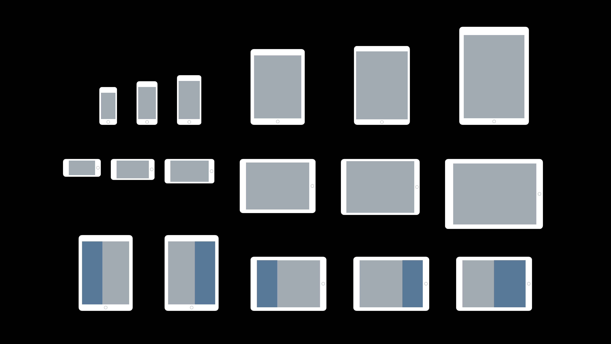
Apple 构建了一套基本框架用于简化设计和构建 iOS App 时的这些过程，这会使开发者节约大量时间，不管用户使用的是哪一款设备你的 app 都会看起来不错。针对于屏幕中的内容采用尺寸类别 Size Classes、使用动态类型 Dynamic Type、利用标准 UI 元素就是需要考虑的三点。
Size Classes
各种尺寸的 iOS 屏幕方向都可以归类为两种尺寸类别：compact 紧凑型、regular 常规型。像 iPhone 的布局，更窄的屏幕宽度就是紧凑型，而像 iPad 的屏幕更宽的宽度就是常规型。
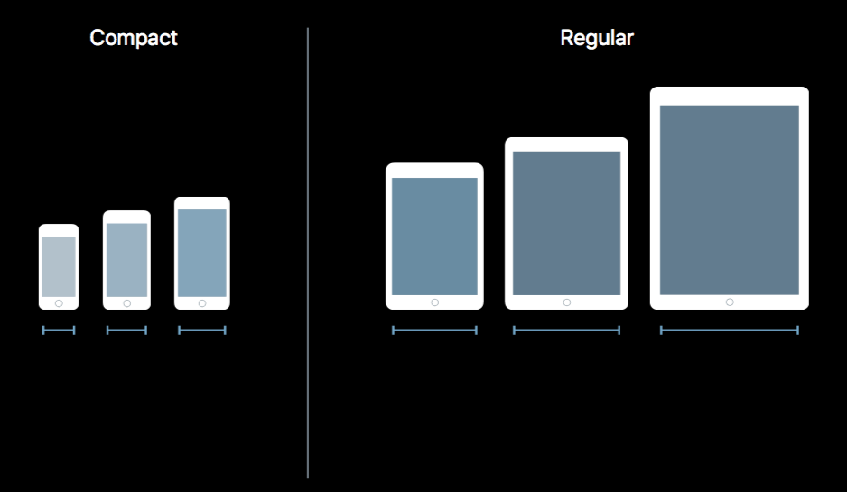
把各种尺寸的屏幕的不同屏幕方向归类在一起，每个屏幕状态的宽度和高度就可以划分出对应属于哪一个尺寸等级。根据屏幕等级，屏幕上的内容应该更加灵活，元素应该根据屏幕尺寸进行自适应。
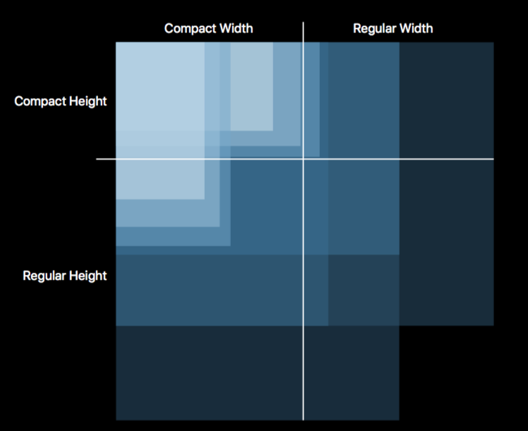
例如，横屏下的 iPhone 7 Plus 就是常规宽度，这使其可以像 iPad 一样显示分屏视图。而其他两个更小的 iPhone 在横屏下的宽度和高度都是紧凑型的。
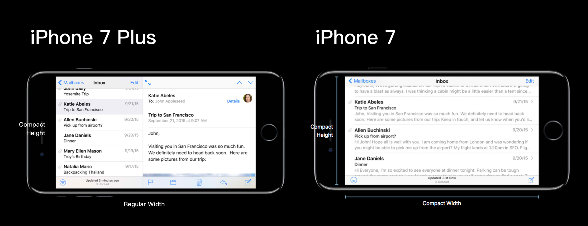
这也意味着在小屏的 iPhone 上横屏条件下 bar 的高度是比竖屏条件下的高度小一些的。
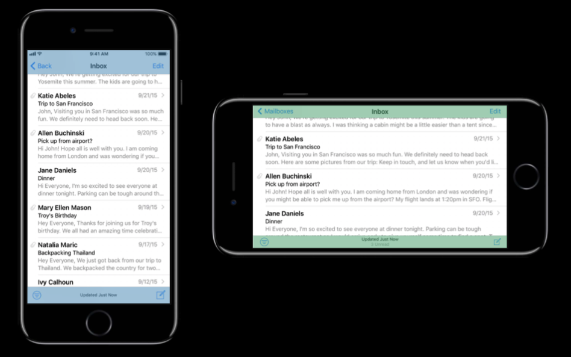
屏幕的宽度也定义了 UIKit 的边界值，边界宽度可以是标准的，也可以是像 iPad 这种大屏幕一样更加宽松。但要注意，如果文本的边界宽度与 UIKit 的边界宽度一样，文本就会变得很长，在一行的结尾人的眼睛就需要来回地从一边跳到另一边。所以我们使用可读性边界（Readability Margin）在大屏设备上限制每行的长度。这些边界值是灵活的，可以根据文本尺寸发生变化。更小的文本需要更窄的可读长度，更大的文本需要更宽的可读长度。
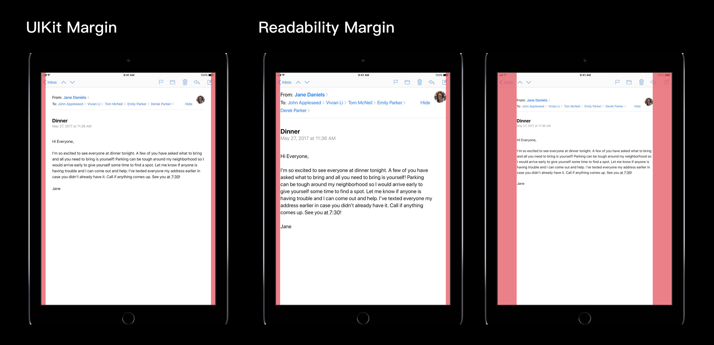
对于各种屏幕尺寸、屏幕方向的设备的 Size Class 具体定义如下：
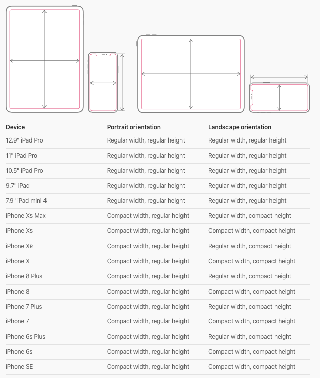
特别地，在 iPad 上以多任务方式运行你的 app 时，其 Size Class 定义如下：
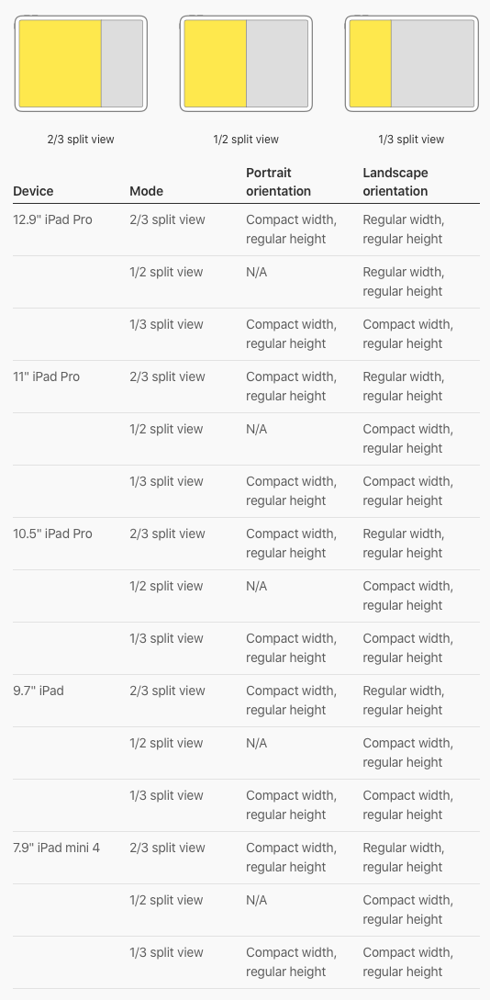
注：自 iOS 12 开始，苹果在全系 iPad 上移除了竖屏模式下 1/2 Split View 的这种显示模式。
Dynamic Type 动态类型
如果你使用具备可读性边界属性的动态类型的话，人们使用你的 app 将会有一个更舒服的阅读体验。动态类型预定义了可以在不同设备上变化大小的文本样式，用户可以使用某一种文本尺寸以达到最舒服的用户体验。
有许多用户感觉在他们的 app 里的文本太小了而不能阅读。所以可以使用动态类型，从而自动地允许文本放大放小，又不影响布局。用户可以在辅助功能设置中开启更大类型。也可以使你的 app 本地化更加无缝。
你的文本将会根据字符的高度调整字间距、行间距。使用这个特性会让更多的用户使用你的 app 更加容易。
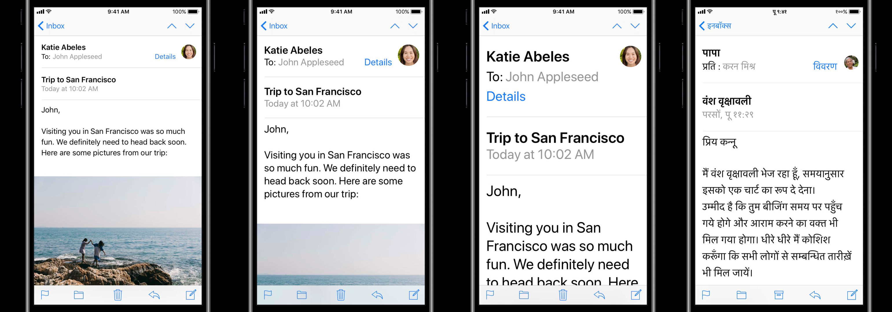
Apple 定义了一份标准的动态类型图表。最近，Apple 针对于我们已经存在的文本样式进行了一些调整，将 Tiltle 样式的字重从 light 调整到了 regular。在大多数的场景下，我们推荐在每个屏幕上使用两到三种文本文本样式。你可以从十种不同的文本样式中选择，这里有无数的组合，在设计你的 app 时有很大的灵活性。
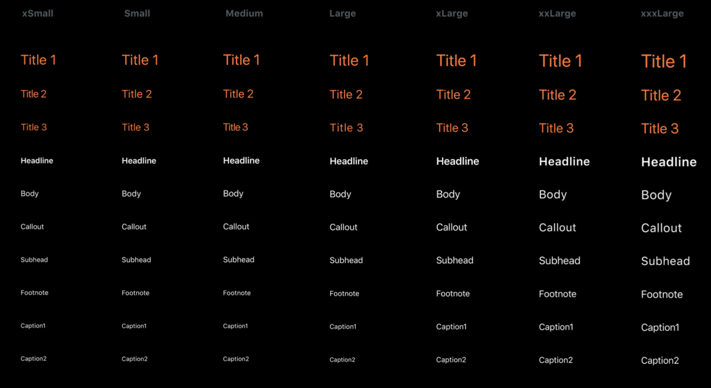
其中 Large 类型是系统默认的，其不同文本样式的字重、字号、行间距、字间距在 iOS 中具体定义如下：
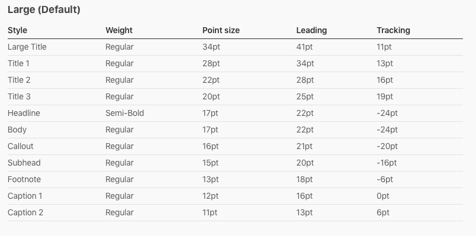
上表中提到的 Tracking 字间距可以直接在 Photoshop 中调整，但在 Sketch 中需要调整 Character Spacing，两者之间的换算关系如下：
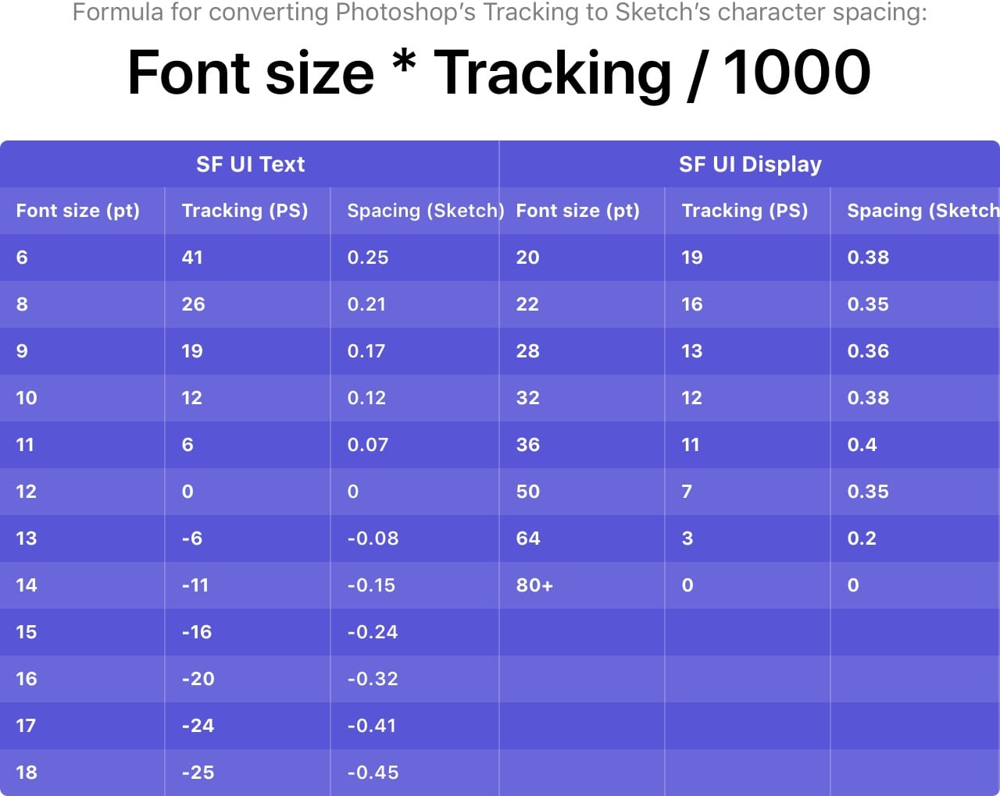
文本样式的名字是具有描述性的，建议了那种文本样式更适合在什么场景下使用。例如，Body 文本样式更适合在一大片正文文本中使用，它也是 iOS 整个系统的默认文本样式。你也可以使用更大或更小的文本样式，在下面的例子里，你还可以使用更粗的文本样式来建立文本层级。
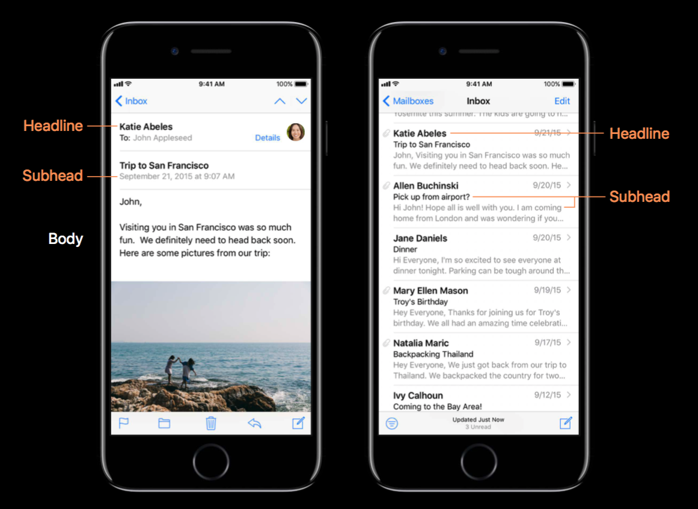
使用 Apple 提供的 API，也可以为自定义字体创建动态类型。这需要你为不同的字号尺寸分配不同的文本样式，因为不是所有的字体都有着同样的比例。
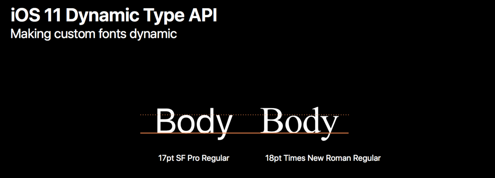
UIKit Elements
与其在设计一个人们都早已熟悉的功能上下功夫，不如集中精力设计你 app 里独一无二的部分。Apple 提供了一系列的标准 UI 元素可以在你的 app 里使用，这些元素可以自动适配所有屏幕尺寸。
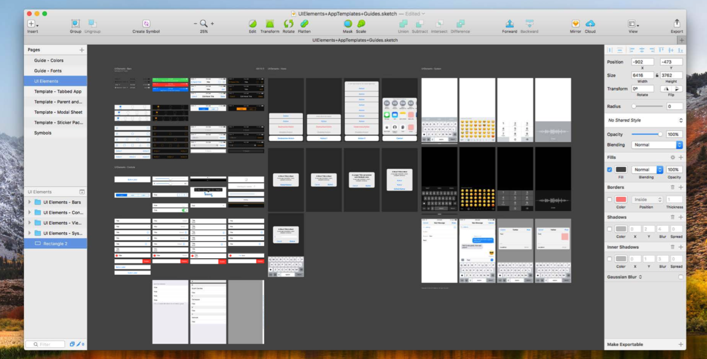
像 TableView 这种不仅可以很好地根据动态类型调整文本大小，同时也继承了可读性边界、标准的交互（如滑动操作、编辑模式）。还有好多其他的资源可以帮助你的 app 增强一致性、在所有的设备上无缝适配。
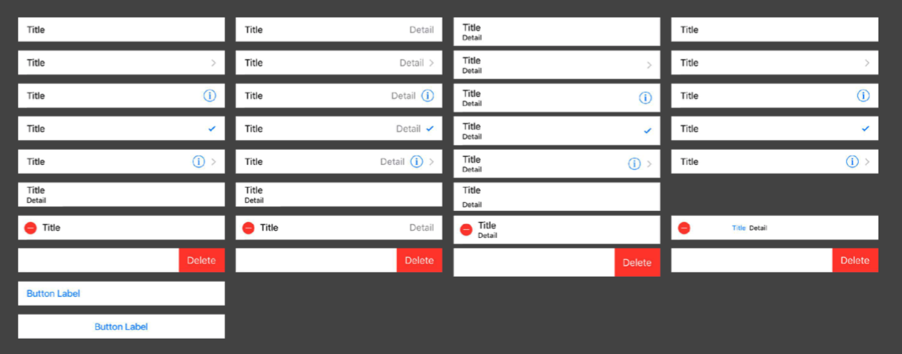
对于 iPad 上的适配，这里有一些小建议。标准的尺寸级别或者说 iPad 可以使用分屏视图，为了在 iPhone 和 iPad 上保持内容层级，需要考虑你的 app 的内容是怎样呈现的。
对于分屏视图，其左侧被称之为 Master View 主视图，右侧被称为 Detail View 详情视图。在 iPhone 上的详情视图你必须要进入更深的层级页面才能看到。
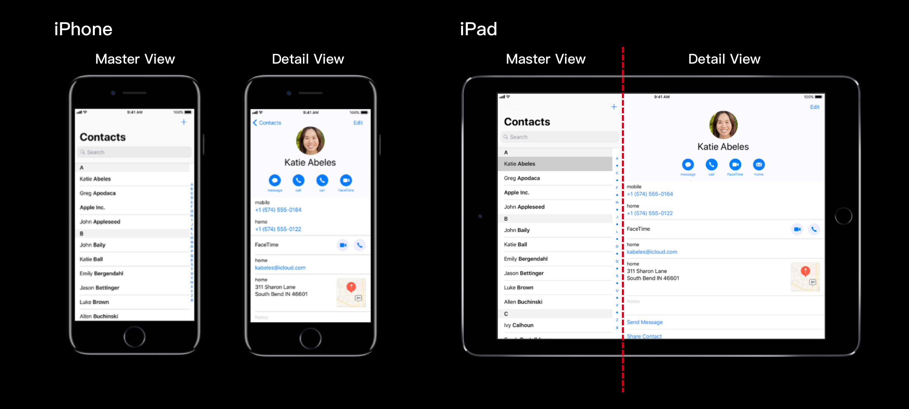
一个 iPad 会共享 iPad 和 iPhone 上特定的布局，iPad 的布局应该与 iPhone 布局一样保持相同的布局层级，比如标准的导航栏、工具栏、标签栏等。
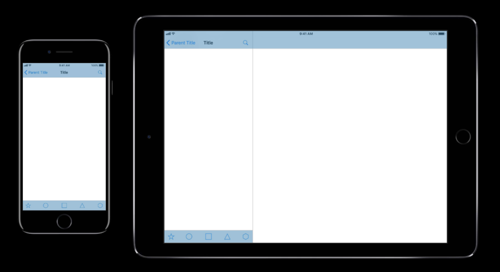
如果的你的 app 可以使用多任务功能，当你的 app 需要与其他 app 同时显示时这可以保持 app 的一致性。在多任务时，你的 app可以根据当前的屏幕宽度在 iPhone 布局或者说 Compact 紧凑型布局和 Regular 标准型布局间过渡切换。
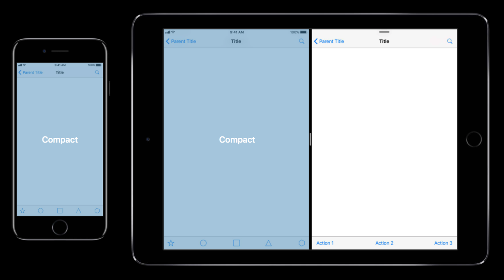
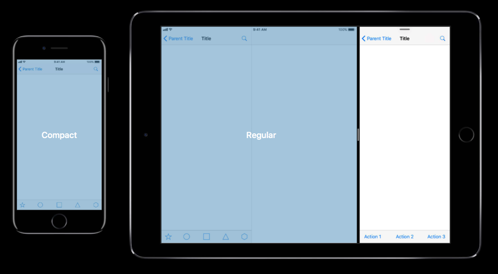
总结
- 考虑使用 Size Class 可以使你的 app 不管用户使用什么设备都能表现的很出色。
- 使用动态类型可以使你的文本更加容易放大缩小、翻译到其他语言，这可以让更多的人使用你的 app。
- 充分利用好已经有的 UI 元素将会把你从再设计、再创造那些用户早已熟悉的功能中解放出来。
我们鼓励你利用好这些工具，不仅会节约你的时间，而且不管用户使用的是什么 iOS 设备，你的 app 的体验都是无缝完美的。
参考链接
- Size Classes and Core Components - WWDC 2017 - Videos - Apple Developer
- Adaptivity and Layout - Visual Design - iOS Human Interface Guidelines
- Typography - Visual Design - iOS Human Interface Guidelines
如果你觉得这篇文章对你有所帮助，欢迎请我喝杯咖啡，感谢你的支持😁